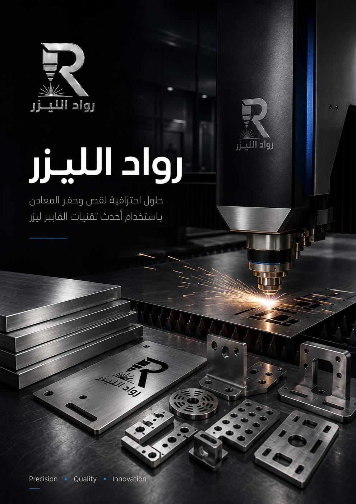
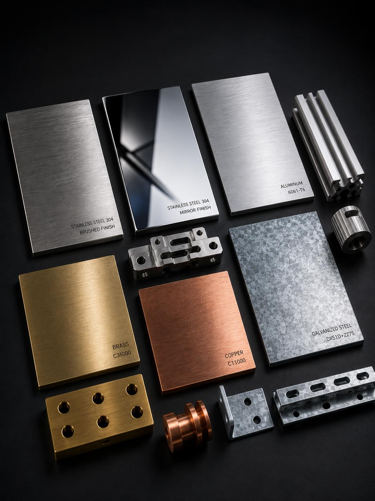
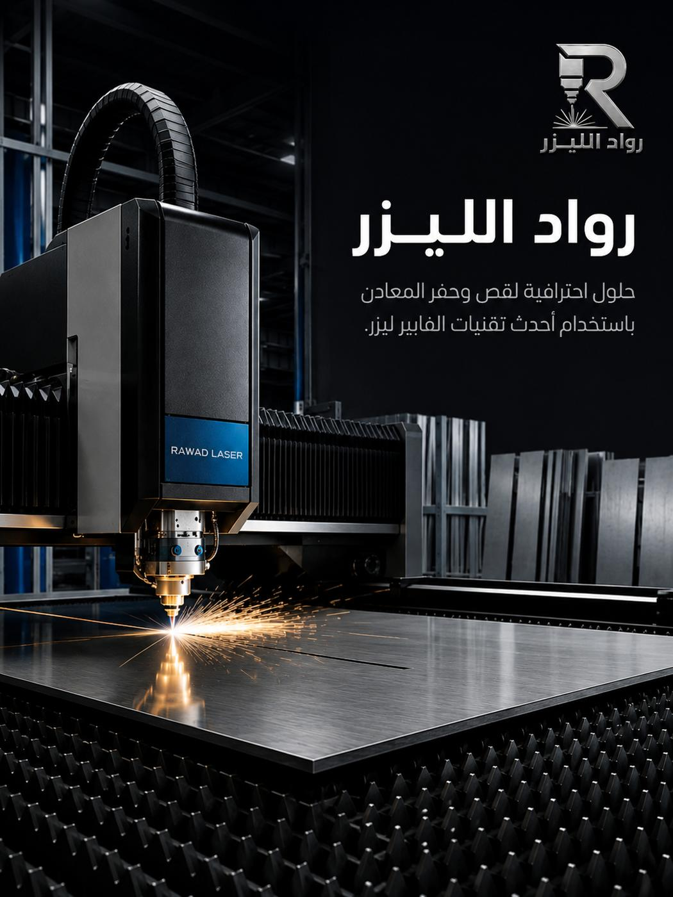
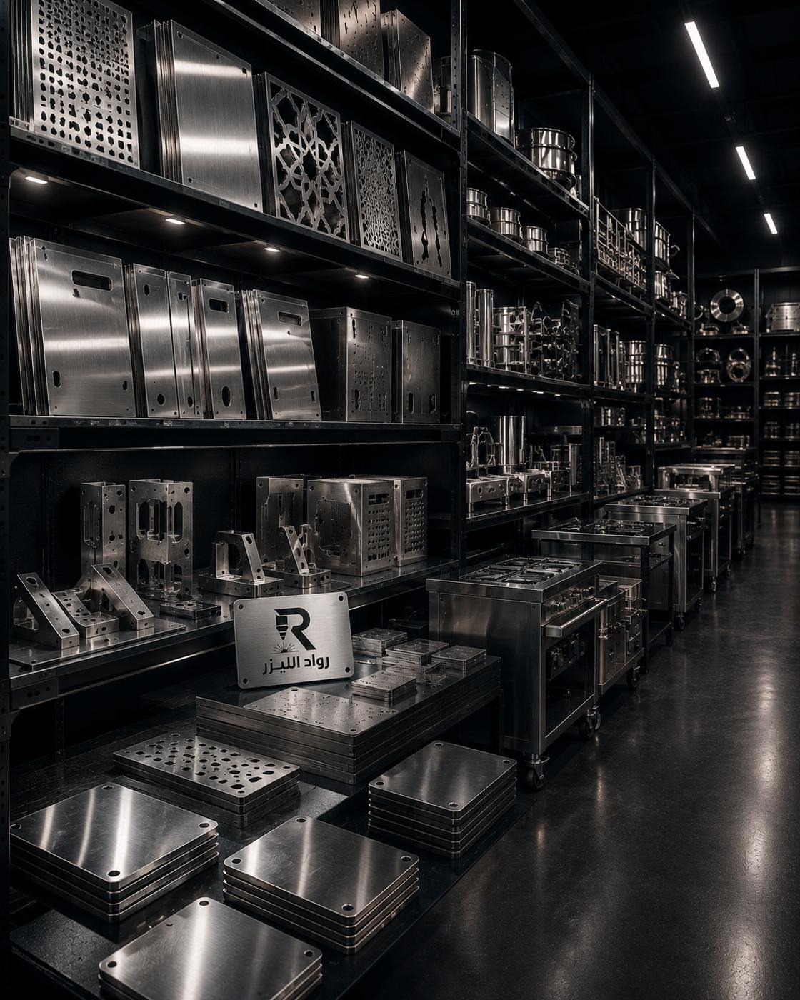

قطع دكتات ومجاري هواء
أضلاع ووصلات وفتحات تهوية بمقاسات مضبوطة تُثنى بعد القص وتُجمَّع في الموقع.
الصفيحة المجلفنة حديد مغطّى بطبقة زنك تحميه من الصدأ — حلٌّ وسط عملي بين سعر الحديد ومقاومة الستانلس. نقصّها بالليزر بدقة، ونوضّح لك كيف تُعالج حافة القص التي يفقد فيها الزنك تغطيته.

الجلفنة تغطية للحديد بطبقة زنك تعمل كحماية مزدوجة: فهي تفصل المعدن عن الهواء والرطوبة، وتحميه كهربائياً أيضاً — أي أن الزنك يتآكل بدلاً من الحديد إن تعرّض السطح لخدش بسيط. لهذا تصمد الصفيحة المجلفنة سنوات في أماكن يصدأ فيها الحديد العادي خلال أسابيع.
الحقيقة التي يجب أن تعرفها قبل القص: خط القص نفسه هو المكان الذي تنقطع فيه تغطية الزنك. الطبقة تبقى على الوجهين، لكن الحافة تصبح حديداً مكشوفاً بسماكة اللوح. في معظم الاستخدامات الداخلية أو المحمية لا يمثّل ذلك مشكلة عملية، لكن في الاستخدام الخارجي المعرّض للماء المباشر يُستحسن معالجة الحافة بطلاء غني بالزنك.
نخبرك بهذا مسبقاً لا بعد التسليم، لأن التفاصيل الصغيرة كهذه هي ما يحدّد إن كانت القطعة ستدوم خمس سنوات أو تُستبدل بعد سنة — وهي معلومة لا يجب أن تكتشفها بنفسك بالتجربة.
أضلاع ووصلات وفتحات تهوية بمقاسات مضبوطة تُثنى بعد القص وتُجمَّع في الموقع.
ألواح بمقاسات المشروع مع فتحات تثبيت ومصارف، جاهزة للتركيب دون قصّ يدوي في الموقع.
أغلفة تحمي المعدات من الرطوبة والغبار، مع فتحات تهوية ومداخل كابلات مدروسة.
دفعات متكرّرة بنفس المواصفة لمشاريع مستمرة، بتكلفة ثابتة لكل قطعة وجدول تسليم مرتّب.
مشاريع المقاولات والكمياتفتحات وشقوق متكرّرة بأنماط منتظمة تسمح بمرور الهواء وتحمي من دخول الأجسام.
حوامل تُثبَّت على الأسطح أو قرب مصادر الماء وتحتاج عمراً أطول من الحديد المطلي.
| المعيار | الصفيحة المجلفنة | البديل ومتى يُفضّل |
|---|---|---|
| السعر | أعلى قليلاً من الحديد الأسود، وأقل بكثير من الستانلس. | الحديد المطلي إن كانت القطعة داخلية وجافة تماماً. |
| مقاومة الصدأ | جيدة على الوجهين، وحافة القص تحتاج معالجة في الخارج. | الستانلس 316 للتماس المستمر بالماء المالح. |
| المظهر | رمادي مبقّع غير متجانس، ليس مخصّصاً للمظهر النهائي. | الستانلس المصقول أو الألمنيوم المطلي للقطع الظاهرة. |
| اللحام | ممكن لكنه يحرق الزنك موضعياً ويطلق أبخرة تحتاج تهوية. | الحديد الأسود إن كان التصميم يعتمد على لحام كثيف. |
| الطلاء بعده | يحتاج تحضيراً خاصاً ليثبت الطلاء على سطح الزنك. | الحديد الأسود ثم طلاء بودرة للمظهر اللوني الدقيق. |
السماكات والأنواع المتاحة (مجلفن بالغمر الساخن أو كهربائياً) تختلف حسب الطلب — أرسل المواصفة ونؤكد التوفر والسعر.

عينة مجلفن
قص الصفائح
قطع جاهزةالصور نماذج وتصورات بصرية توضح إمكانيات الخدمة.
قطع دكتات ووصلات ومشبكات بمقاسات المشروع، تُسلَّم مقصوصة وجاهزة للثني والتجميع.
قطع أسقف ومظلات وحوامل معرّضة للرطوبة، بميزانية تناسب الكميات الكبيرة.
أغلفة معدات وصناديق ولوحات تعمل في بيئات رطبة أو مغبّرة.
أغطية وأسقف خفيفة ومظلات خارجية بحلٍّ عملي لا يصدأ سريعاً.
ثني الدكتات والأغلفة بزوايا مضبوطة مع مراعاة عدم تقشير طبقة الزنك عند الطي.
اذهب إلى الصفحةالبديل الأوفر إن كانت القطعة داخلية أو ستُطلى بطلاء نهائي بعد التصنيع.
اذهب إلى الصفحةمعالجة الحواف وفحص القياسات قبل التسليم، بما يشمل حماية حافة القص عند الحاجة.
اذهب إلى الصفحةالحافة تصبح حديداً مكشوفاً، لكن الزنك المجاور يوفّر حماية جزئية للمسافات القريبة. في الاستخدام الداخلي لا يمثّل ذلك مشكلة عادةً، وفي الخارج ننصح بطلاء غني بالزنك على الحافة — ونذكر ذلك في عرض السعر إن كان استخدامك خارجياً.
التأثير يبقى محصوراً في شريط ضيق جداً حول خط القص لأن منطقة التأثر الحراري في الليزر ضيقة. أما بقية سطح اللوح فتبقى تغطيتها سليمة تماماً.
غير مفضّل عادةً لأن سطحه غير متجانس اللون والملمس. إن كان المظهر مهماً فالستانلس المصقول أو الألمنيوم المطلي أنسب — ونوضّح لك الفرق قبل التنفيذ حتى لا تُفاجأ بالنتيجة.
نعم، وهي من أنسب الطلبات لهذه الخدمة لأنها متكرّرة بنفس المواصفة. أرسل قائمة القطع والكميات ونعطيك سعراً لكل قطعة وجدول تسليم على مراحل يناسب تقدّم المشروع.
أرفق المقاسات والسماكة والعدد، ووضّح هل الاستخدام داخلي أم خارجي لنرشّح لك المعالجة المناسبة للحافة.
أرسل قائمة القطع والكميات، ونعيد لك سعراً لكل قطعة وجدول تسليم واضح.